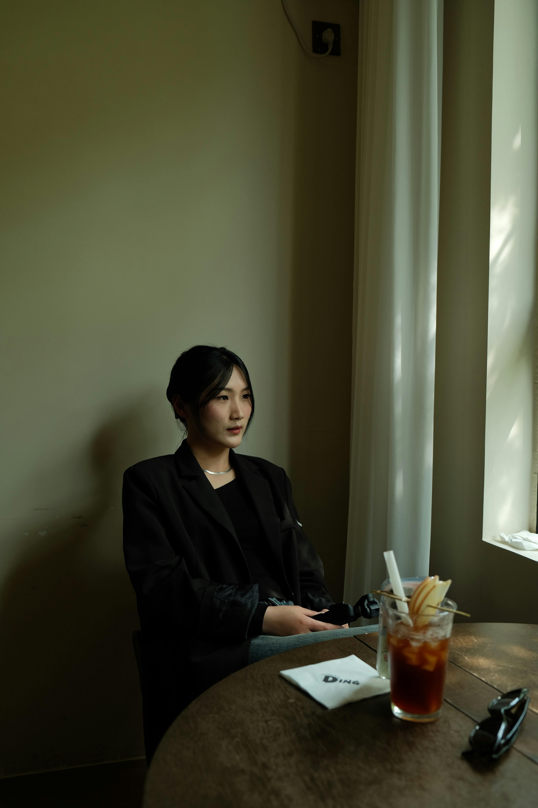
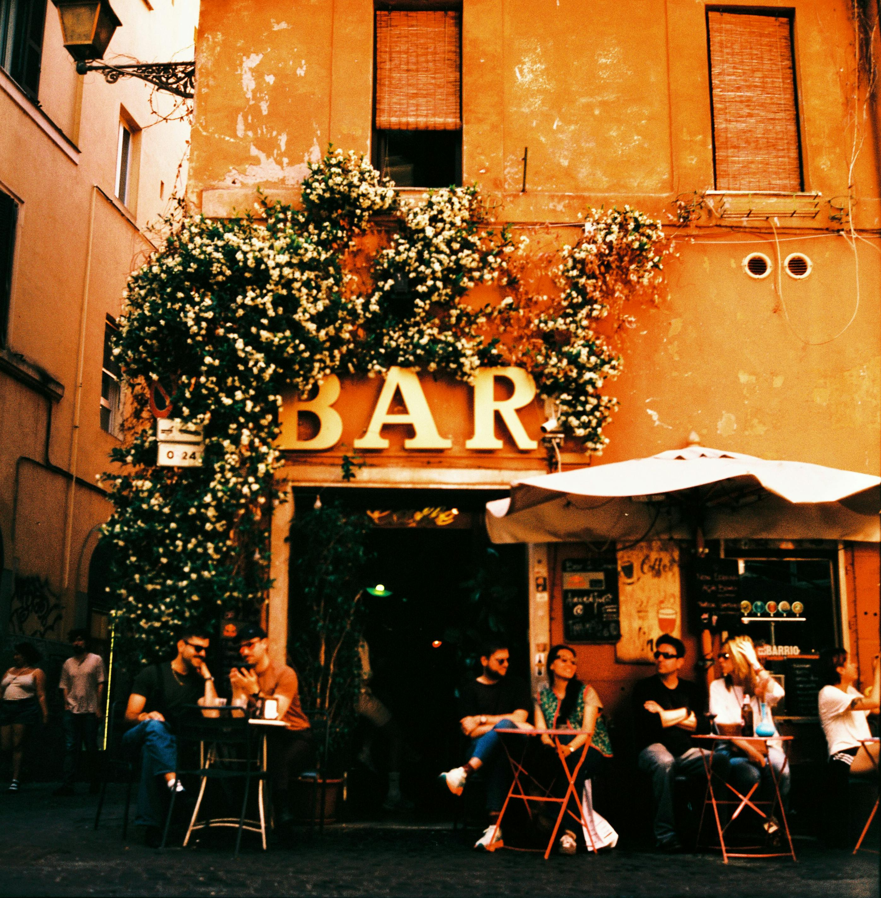
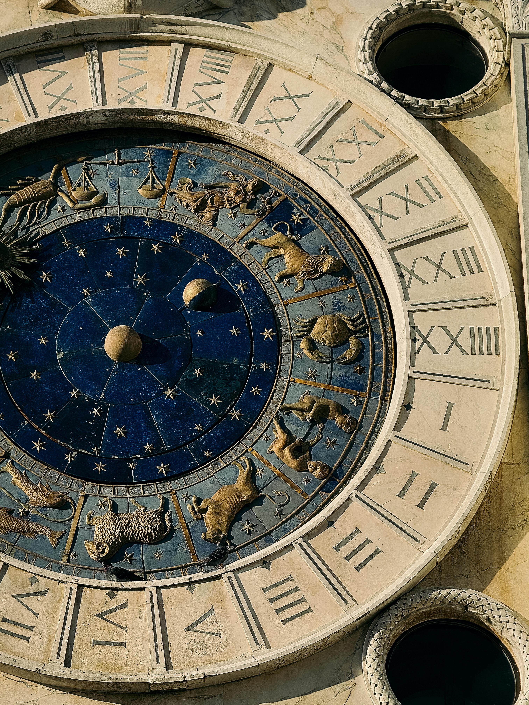
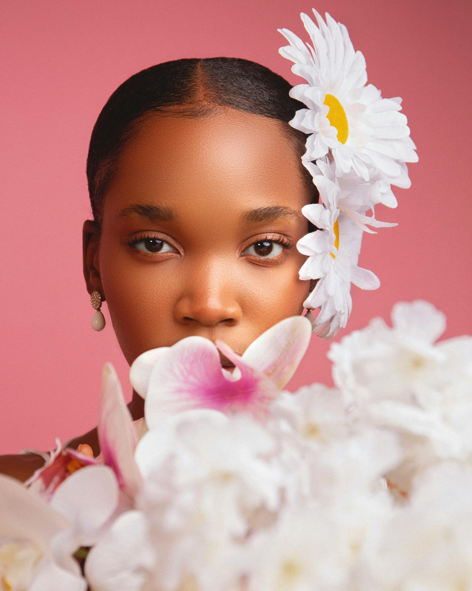
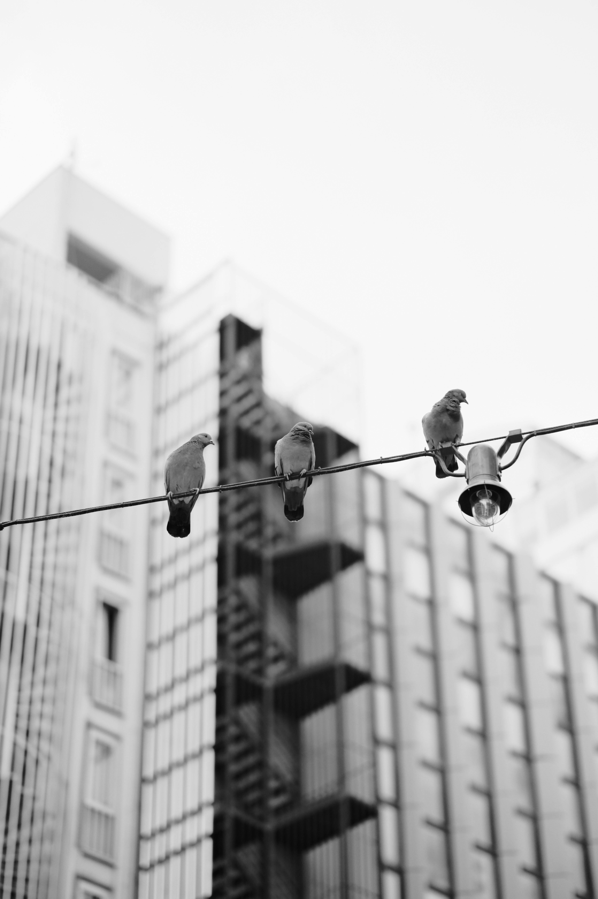
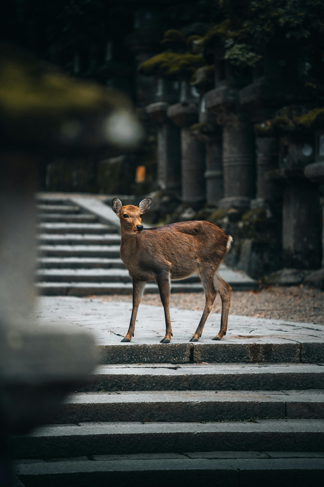

Fotografia profissional
Sobre

Há quase duas décadas, Seras Victoria transformou o fotojornalismo em uma busca obsessiva pela autenticidade. Esqueça as poses plásticas: aqui, o foco são trajetórias reais. Do Maranhão para o mundo, são mais de 300 casamentos e destinos internacionais registrados sob a ótica do inesperado. Ela traduz memórias em design editorial de alto luxo, o duo consolidou uma assinatura premiada por associações globais. Hoje, o fruto dessa criatividade é o estúdio próprio em Marajá do Sena - um laboratório de retratos e educação voltado para quem busca o extraordinário.
Portifólio
As imagens abaixo revelam a verdadeira face do belo: o inesperado em perfeita harmonia com a criação. Mais do que fotografias, são a mais pura ilustração da alma.




